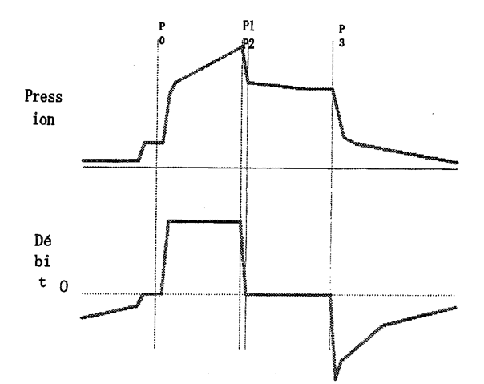

Cette épreuve fondamentale comprend 20 questions couvrant l'ensemble des connaissances théoriques en anesthésie réanimation avec une question iconographique sur la ventilation mécanique.
📝 Questions
Question 1

La courbe de pression ci-dessous représente la pression d'un patient soumis à une ventilation à volume contrôlé (avec débit inspiré constant) avec une pause inspiratoire de 30 % de Ti.
Que représentent P0, P1, P2 et P3 ?
Comment calculer la compliance quasi-statique et la pression motrice ?
Question 2
Donnez la formule de calcul du delta PP (ΔPP). Quelle est la valeur seuil pouvant prédire une réponse au remplissage ? Précisez les conditions de validité de la mesure.
Question 3
Quelle est l'effet de la position couchée sur le volume de fermeture et la CRF chez un obèse ? Quelles en sont les conséquences respiratoires ? Quels sont les 2 moyens simples pour lutter contre cet effet ?
Question 4
Définir la P50. Citez les causes d'une diminution de la P50 et leurs conséquences sur la délivrance tissulaire de l'oxygène.
Question 5
Citez les contre-indications à la succinylcholine.
Question 6
À propos du sugammadex : quelle est son indication ? Quelles sont ses posologies en fonction des conditions d'utilisation ?
Question 7
Citez 5 critères de ventilation au masque difficile chez l'adulte (en dehors des pathologies cervicales).
Question 8
Quels sont les critères de jeûne préopératoire chez l'enfant de moins d'un an ?
Question 9
Quels sont les risques cardiovasculaires de l'anesthésie chez un diabétique ? Quels sont les éléments spécifiquement cliniques pour les dépister à la consultation d'anesthésie ?
Question 10
Comment définir un patient dénutri en préopératoire ?
Question 11
Quels sont les signes cliniques d'une intoxication aux anesthésiques locaux ?
Question 12
Quel est le traitement spécifique d'urgence d'une intoxication aux anesthésiques locaux ?
Question 13
Citez 5 items du volet 1 de la check liste OMS (check liste préopératoire).
Question 14
Vous êtes appelé en urgence pour la survenue d'un arrêt cardio-vasculaire avec fibrillation ventriculaire au cours d'une séance de dialyse chez un patient de 70 ans. Quelle est la principale étiologie suspectée et les principes de la prise en charge ?
Question 15
Quelles sont les modalités spécifiques de la prise en charge d'un syndrome hémorragique sévère sous dabigatran ?
Question 16
Quels sont les critères diagnostiques d'un diabète insipide central ?
Question 17
Mr X a une créatininémie à 70 micromol/l, une diurèse à 750 ml/24h et une créatininurie à 3mmol/l. Définir et calculer la clairance de la créatinine.
Question 18
Citez 5 causes d'HTA secondaire.
Question 19
Quelles intoxications évoquez-vous devant une acidose métabolique non lactique à trou anionique augmenté ?
Question 20
Six heures après votre prise en charge d'un choc hémorragique, le bilan biologique de contrôle met en évidence une calcémie ionisée à 0,98 mMol/L. Comment l'interprétez-vous ? Quelles en sont les causes et les conséquences ?
🚀 Rejoignez notre formation complète
Cette annale fait partie de notre programme de formation. Découvrez notre préparation intensive avec corrections détaillées pour maximiser vos chances de réussite aux EVC.